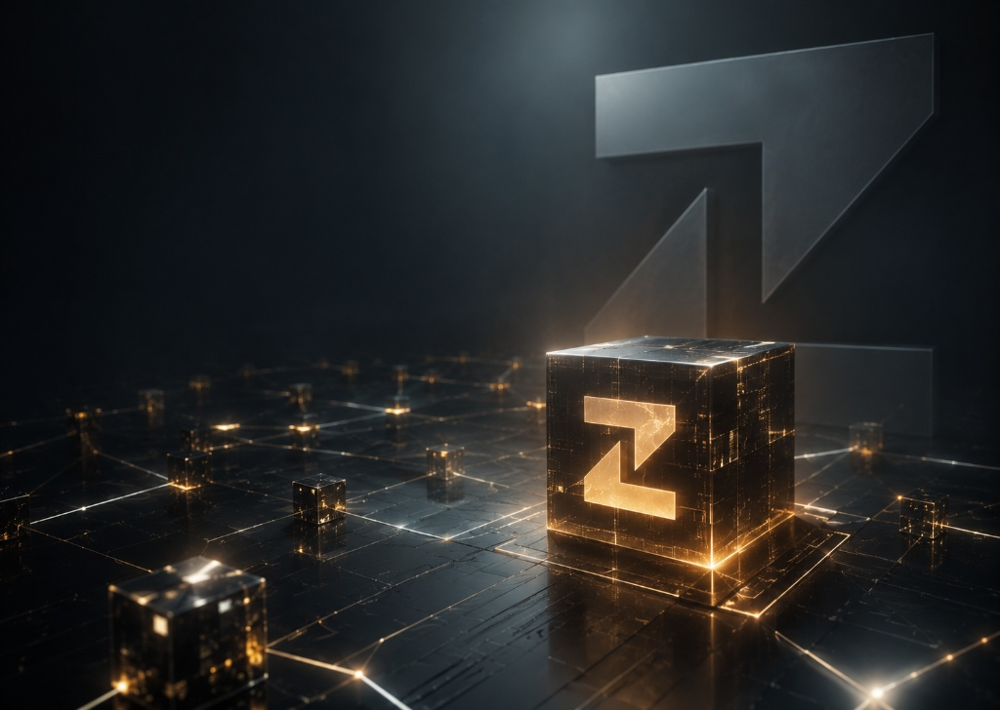

Construyendo una nueva experiencia de minería en la nube y tecnología blockchain.
Zitro Network conecta minería en la nube desde una aplicación móvil, educación tecnológica, comunidad e infraestructura blockchain en evolución.

Construyendo una nueva experiencia de minería en la nube y tecnología blockchain.
Zitro Network conecta minería en la nube desde una aplicación móvil, educación tecnológica, comunidad e infraestructura blockchain en evolución.

Eficiencia en el Dispositivo
La experiencia no utiliza la CPU o GPU del dispositivo para minería computacional.
Educación Tecnológica
Zitro Academy para comprender tecnología blockchain y análisis de mercado.
Sistema de Comunidad
Crecimiento colaborativo mediante un sistema de referidos y equipo.
Infraestructura Blockchain
Hoja de ruta orientada al desarrollo de protocolos descentralizados.
Cuatro pilares para construir el ecosistema Zitro Network.
Zitro Network unifica minería en la nube, capacitación tecnológica integral y una visión de infraestructura sólida en una plataforma accesible.
Minería en la Nube
Inicia sesiones gestionadas mediante la infraestructura cloud de Zitro Network. La aplicación no utiliza la CPU o GPU del dispositivo para realizar minería computacional.
Zitro Academy
Educación tecnológica y comprensión de mercados. Aprende conceptos fundamentales de blockchain, seguridad digital, análisis estructural y tecnología Web3 con módulos estructurados.
Comunidad & Red
Construye tu comunidad y amplía tu red dentro del ecosistema. Un sistema de referidos que fomenta la colaboración y fortalece la participación activa.
Infraestructura Blockchain
La evolución hacia una infraestructura tecnológica robusta. Una hoja de ruta enfocada en seguridad, smart contracts y protocolos descentralizados.
Minería en la nube accesible desde tu dispositivo móvil.
Inicia sesiones gestionadas mediante la infraestructura cloud de Zitro Network. La aplicación no utiliza la CPU o GPU del dispositivo para realizar minería computacional.
Sesiones flexibles de 6 h, 12 h y 24 h
Elige el ciclo que mejor se adapte a tu rutina e inicia tu sesión de minería en la nube con un solo toque desde la app.
Sin minería computacional en el hardware
La experiencia no realiza cálculos criptográficos pesados en el dispositivo; las sesiones son gestionadas a través de la infraestructura cloud del ecosistema.
Puntos y recompensas de cuenta
El progreso de cada sesión queda registrado como puntos y recompensas internas dentro de la cuenta del usuario.

Educación tecnológica y análisis estructural de mercados.
Desarrolla conocimientos sobre la arquitectura blockchain, seguridad digital y comprensión analítica de estructuras de mercado.
Análisis Estructural de Mercados
Aprende lectura gráfica, tendencias, velas japonesas, soportes, resistencias y conceptos analíticos desde una perspectiva formativa.
Seguridad Digital & Web3
Comprende los fundamentos de contratos inteligentes, llaves criptográficas y principios de seguridad en entornos digitales.
Arquitectura Blockchain
Conoce los mecanismos de consenso, interoperabilidad y el funcionamiento de la infraestructura descentralizada.
Una comunidad que construye la futura red de Zitro Network.
El crecimiento de Zitro Network se fundamenta en la colaboración de sus usuarios. A través del sistema de comunidad y referidos, cada participante contribuye a expandir el ecosistema.
Multiplicador de Equipo
Ambos participantes se benefician con ventajas de participación y progreso interno al mantener activo su equipo en la app.
Monitoreo de Comunidad
Visualiza el estado de actividad de tu equipo directamente en la interfaz de la aplicación.
Acceso Temprano
Prioridad informativa sobre nuevas funciones, módulos de Zitro Academy y avances de la plataforma.
Construcción metódica orientada a infraestructura y utilidad real.
Fases de desarrollo transparentes sin fechas especulativas. Cada hito se consolida antes de avanzar al siguiente.
Aplicación Móvil
Lanzamiento de la app para Android, sistema de registro seguro y configuración inicial del entorno.
Cloud Mining & Community
Activación de sesiones de minería en la nube, sistema de referidos y multiplicadores de equipo.
Zitro Academy
Despliegue de los módulos formativos de tecnología blockchain, seguridad digital y análisis de mercado.
Blockchain Infrastructure
Desarrollo de protocolos descentralizados, smart contracts y servicios avanzados del ecosistema.
Una infraestructura tecnológica en evolución.
Zitro Network continúa desarrollando su arquitectura cloud, experiencia móvil, comunidad y futura infraestructura blockchain.